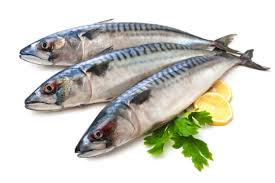

Kembali Ke Daftar Menu
Mengenal Bahan Makanan
Ikan Tenggiri

Tenggiri adalah nama umum bagi sekelompok ikan yang tergolong ke dalam marga Scomberomorus, suku Scombridae.
Ikan ini merupakan kerabat dekat tuna, tongkol, madidihang, makerel dan kembung.
Tenggiri banyak disukai orang, diperdagangkan dalam bentuk segar, ikan kering, atau diolah menjadi kerupuk, siomay, dan lain-lain.
Spesies
Laman FishBase memuat 18 spesies anggota marga ini
- Scomberomorus brasiliensis Collette, Russo & Zavala-Camin, 1978.
- Scomberomorus cavalla (Cuvier, 1829). Tenggiri Amerika, King mackerel.
- Scomberomorus commerson (Lacépède, 1800). Tenggiri Melayu.
- Scomberomorus concolor (Lockington, 1879).
- Scomberomorus guttatus (Bloch & Schneider, 1801). Tenggiri papan.
- Scomberomorus koreanus (Kishinouye, 1915). Tenggiri Korea.
- Scomberomorus lineolatus (Cuvier, 1829). Tenggiri India.
- Scomberomorus maculatus (Couch, 1832). Tenggiri Atlantik.
- Scomberomorus multiradiatus Munro, 1964. Tenggiri Papua.
- Scomberomorus munroi Collette & Russo, 1980. Tenggiri Australia.
- Scomberomorus niphonius (Cuvier, 1832). Tenggiri Jepang.
- Scomberomorus plurilineatus Fourmanoir, 1966.
- Scomberomorus queenslandicus Munro, 1943. Tenggiri Queensland.
- Scomberomorus regalis (Bloch, 1793).
- Scomberomorus semifasciatus (Macleay, 1883).
- Scomberomorus sierra Jordan & Starks, 1895. Tenggiri Pasifik.
- Scomberomorus sinensis (Lacépède, 1800).Tenggiri Cina.
- Scomberomorus tritor (Cuvier, 1832). Tenggiri Afrika bara
Kembali Ke Daftar Menu